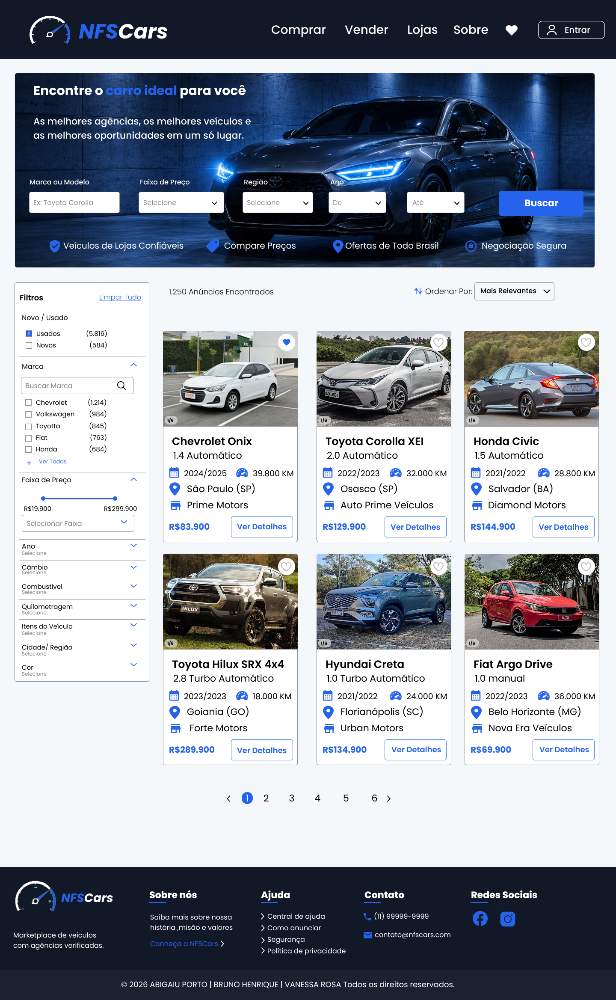

Ver projeto ↗
01
PROJETO ACADÊMICO · UX/UI
NFSCars
Projeto desenvolvido durante minha formação para estudar organização de informações, navegação e construção de interfaces para um marketplace automotivo.